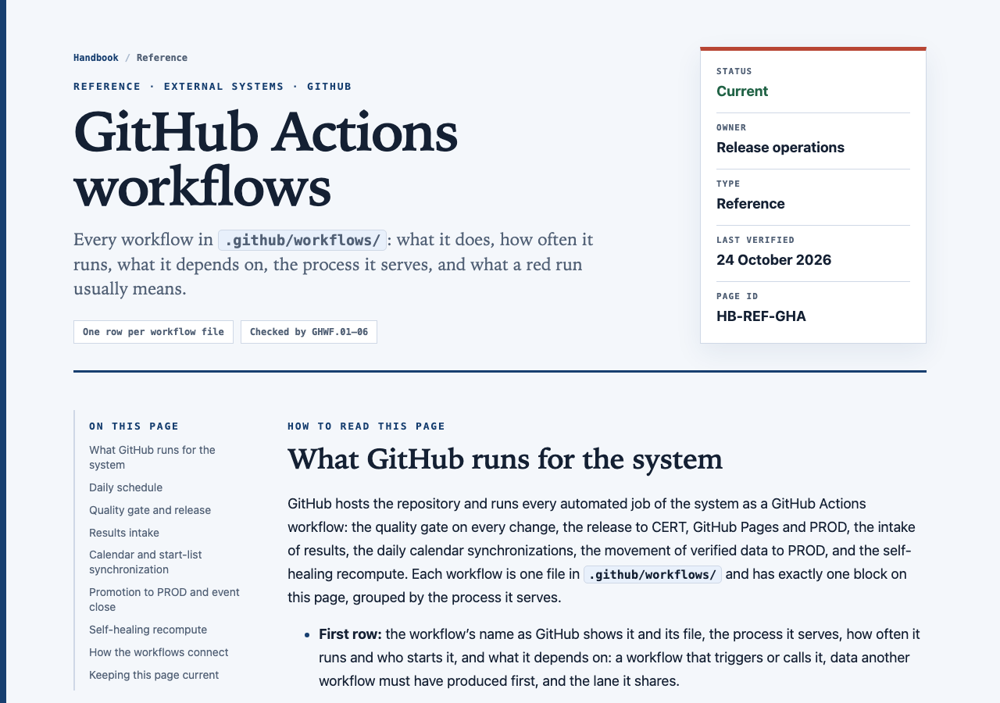
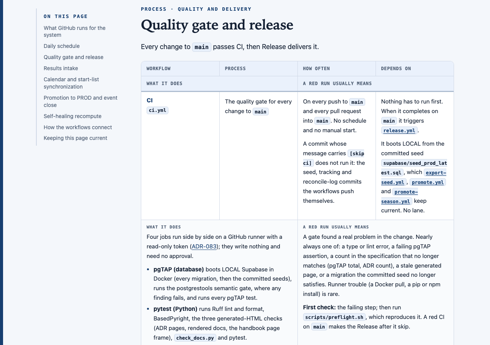
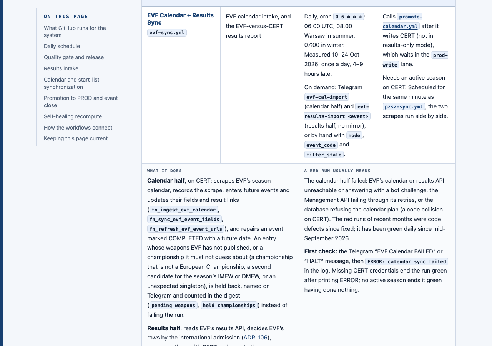
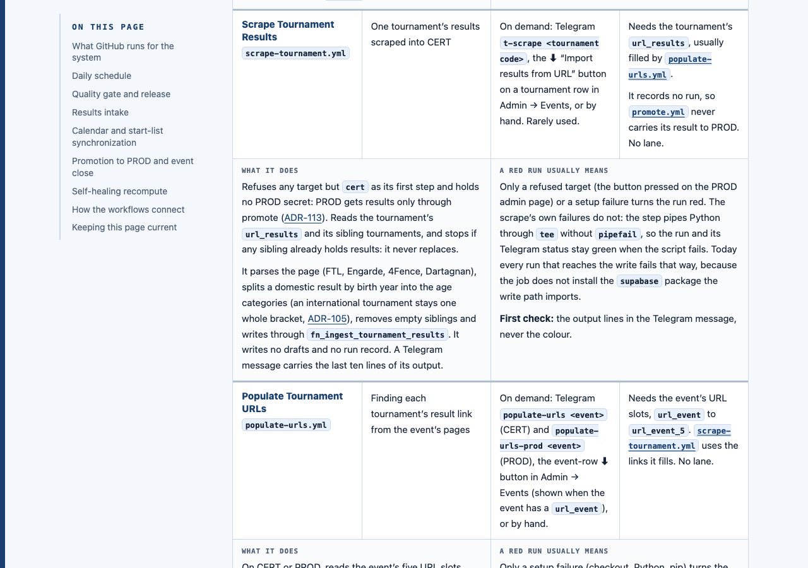
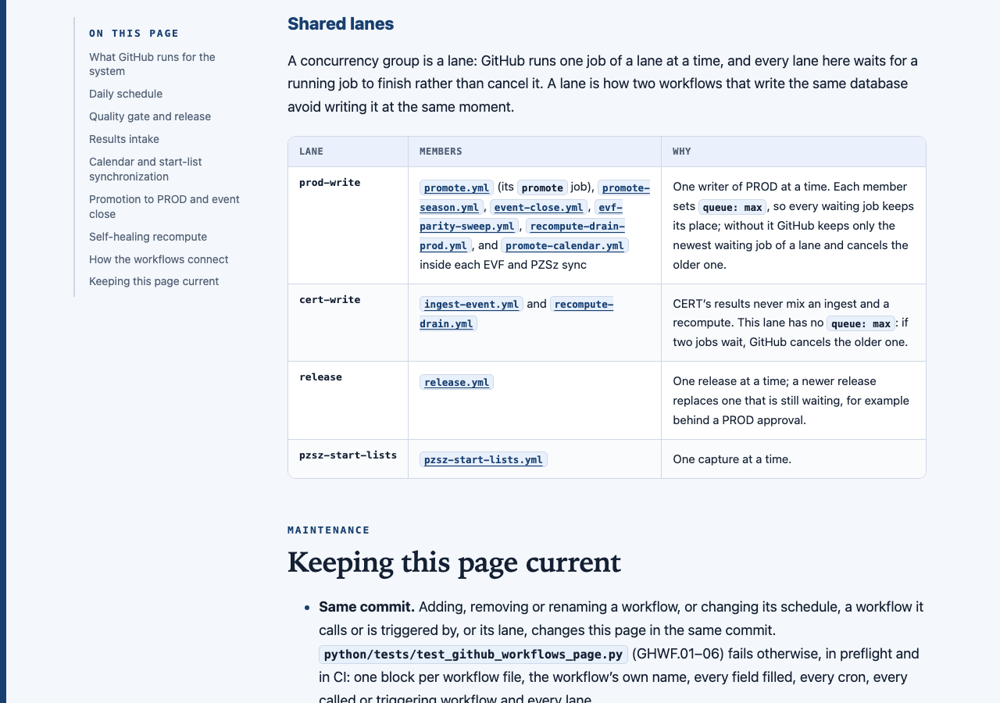
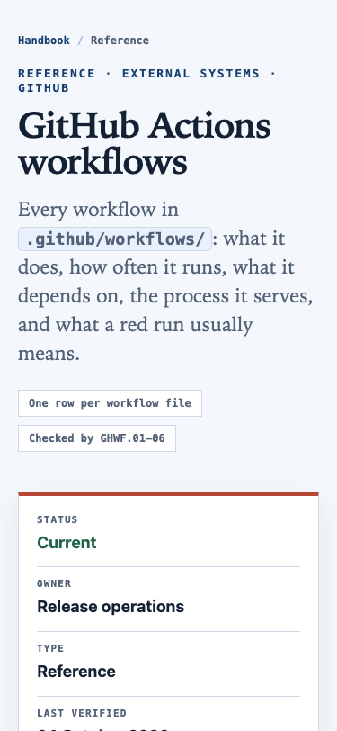
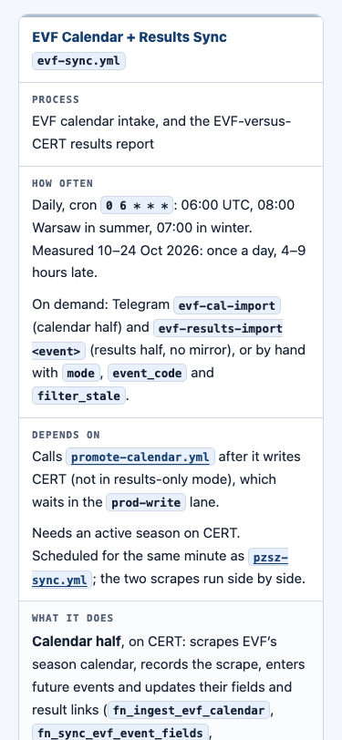
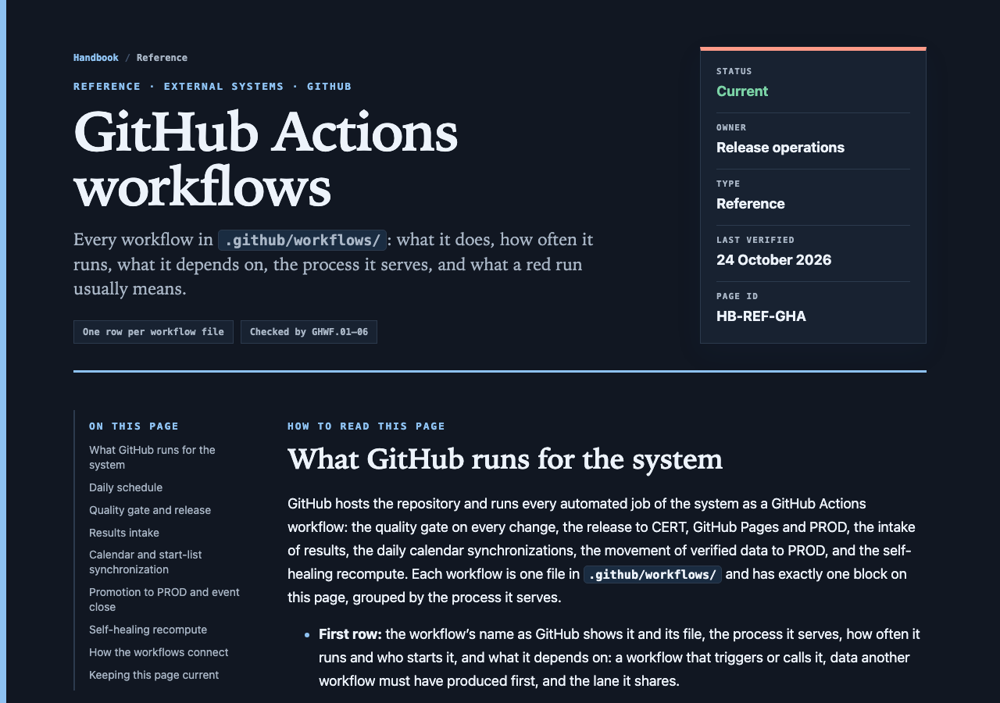
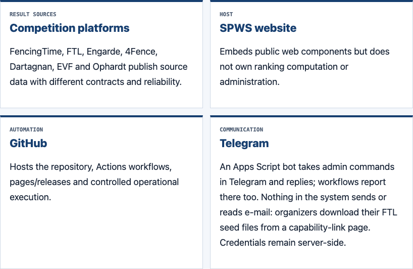
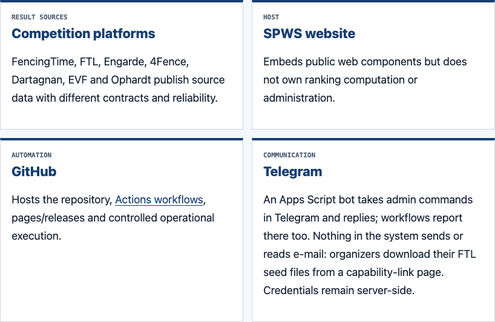

Developer handbook · External systems · GitHub · draft for your review · 24 Oct 2026
The page you asked for, built in the ADR design and linked from the GitHub card under External systems. Every workflow file has one block with the six things you named. A test fails the build when a workflow changes without the page following it, and the release skill says so. It is in the worktree only: nothing is committed or on the branch until you sign off.
Open the page: doc/handbook/reference/workflow-catalog.html (drafted at reference/github-actions-workflows.html; moved here by W1 A).
§ 1 · what is on the page
.github/workflows/: the name (as GitHub shows it, and the file), an elaborate description of what it does, how often it runs and who starts it, what it depends on, the process it supports, and what a red run usually means with the first thing to check.python/tests/test_github_workflows_page.py (GHWF.01–06, seen red before the page existed) fails in preflight and CI unless the page has one block per workflow file, the workflow’s own name, every field filled, every cron, every called or triggering workflow and every lane. Both copies of the release skill (.claude/skills/release/SKILL.md, .agents/skills/release/SKILL.md) now carry the step: a workflow added, removed, renamed or changed updates its block in the same commit.§ 2 · the draft, rendered










§ 3 · how it was written
file:line, after the docs index and the graph; nothing was run, edited or written.pipefail (no shell: set, so GitHub uses bash -e), the package scrape_tournament.py imports at line 327 that the job never installs, and the release gate’s base (the last completed CI run, release.yml lines 41–50).§ 4 · no deterioration
handbook.css use only two new classes (.workflow-table, .lane-table) that no other page has.check_docs.py except for one line that W1 decides: it is not yet in the documentation map.§ 5 · W1 · the page that already exists
doc/handbook/reference/workflow-catalog.html lists the same 18 workflows with three columns (workflow, trigger, responsibility). Thirteen current files link to it (both release skills, ADR-072, five handbook pages, three agent guides and an audit), and 24 plans. Two pages describing the same workflows means two places to update for every workflow change, against the documentation standard’s “one fact, one owner”, and they will drift. Some of the catalog’s text is already wrong (the PZSz 70-row cap “fails the run”: it only warns; export-seed “exports tracking data”: it does not).
reference/workflow-catalog.html, titled “GitHub Actions workflows”. Every existing link keeps working, the documentation map keeps its one entry, and there is one inventory. Nothing the catalog says about a workflow is lost (§ 3).reference/github-actions-workflows.html with its own map entry, and the catalog as it is.§ 6 · W2 · what the research found
The page describes each workflow as it behaves today, these defects included, so that nobody trusts a green run that hides a failure. None is fixed in this draft: you asked for the page only.
| # | Defect | Effect |
|---|---|---|
| 1 | scrape-tournament.yml does not install the supabase package its write path imports (line 327). | Every scrape that reaches the write fails. The ⬇ “Import results from URL” button and Telegram t-scrape write nothing, and the run still shows green (2). |
| 2 | scrape-tournament.yml and populate-urls.yml pipe Python through tee without pipefail. | A failed script leaves the run green and its Telegram status “success”. |
| 3 | The same two put their inputs straight into the shell, unvalidated; the other workflows validate theirs. | An input with shell syntax would run as a command on the runner (only admins and the bot can start them). |
| 4 | The release gate measures from the last completed CI run, whatever its result. | A code change whose release never ran (red CI, or cancelled while waiting behind a PROD approval), followed by a documentation-only change, is not deployed until the next code change. |
| 5 | evf-parity-sweep.yml probes each event’s url_event, the organizer’s page, and counts any fetch error as empty. | In every run sampled from 1 Aug to 24 Oct 2026 it promoted nothing: EVF parity (ADR-053) does not happen. To investigate before a fix. |
| 6 | GitHub starts the crons, all set on the hour, 4–9 hours late; the 19:00 UTC start-list run has started after midnight Warsaw time. | The daily close, syncs and sweep run around midday instead of the morning; a late “final” start-list run can judge the wrong day, so its last-chance alert can be missed. |
| 7 | The cert-write lane has no queue: max. | A waiting ingest can be cancelled by the next drain. Never seen so far. |
| 8 | Smaller gaps: promote-season.yml sends no alert on failure and, like export-seed.yml, pushes without a retry; evf-sync.yml ends green when its CERT credentials are missing; the coherence check’s gate 4 never fires on main; release-manifest.json still describes March. | A failure that nobody hears about, or a check that never checks. |
| 9 | Two admin texts: the ⬇ on an event row says “Import results from event page” but imports none (it fills result links); the alias screen says “regenerated · sent to Telegram” when GitHub has only accepted the start. | The admin is told something that has not happened. A UI change, so it gets its own before/after sheet. |
| 10 | More than 30 comments in workflow files, scripts and two ADRs say something the code no longer does (a /regen Telegram command that does not exist, a “Re-ingest event” button that does not exist, rationale “in pzsz-sync.yml” that moved, old lane member lists). | The next reader is misled. |
§ 7 · decide this
Answer like W1 A, W2 A. After sign-off: the page goes where W1 says, then refresh-graph, the docs index, preflight, commit on the branch, and the before/after of the published page through html-preview before anything goes to main.
| # | Question | Options | Rec. |
|---|---|---|---|
| W1 | The existing workflow catalog | A the new page replaces it at its address; one inventory, no broken link B keep both pages | A |
| W2 | The ten defects in § 6 | A fix all ten in this session after the page, test first B fix #1–#4 now, plan the rest C plan only | A |
github-actions-workflows-page · 24 Oct 2026 · sources: .github/workflows/*.yml, the code they run (file:line), gh run history (last 200 runs per workflow), scheduled start times 10–24 Oct 2026 · screenshots: headless Chromium on file:// URLs